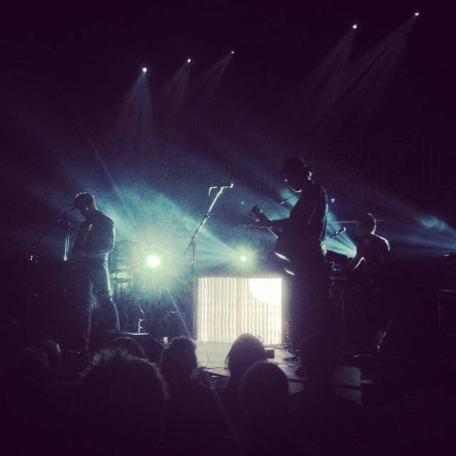
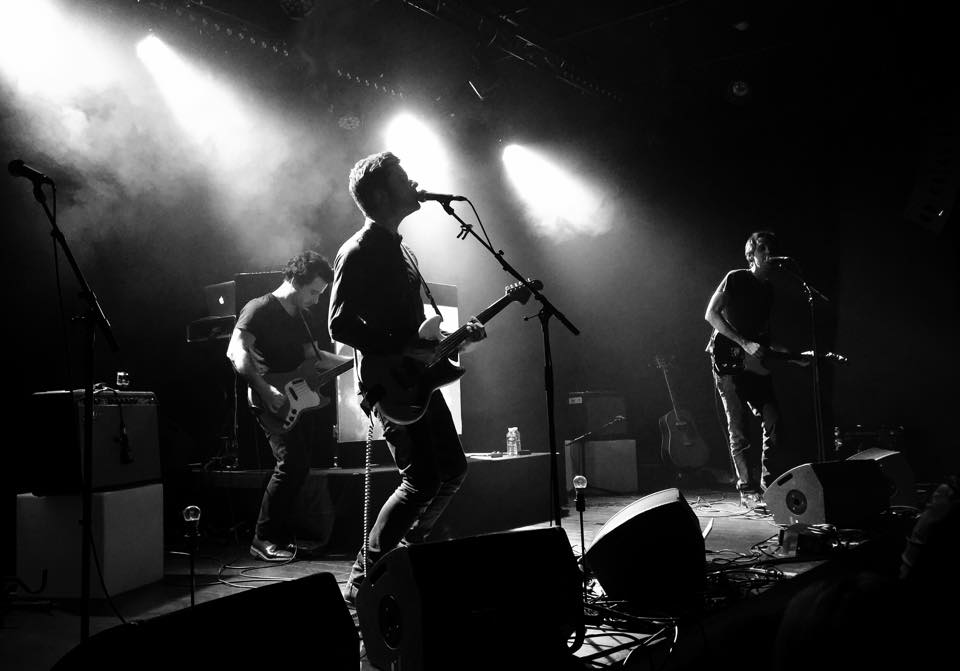
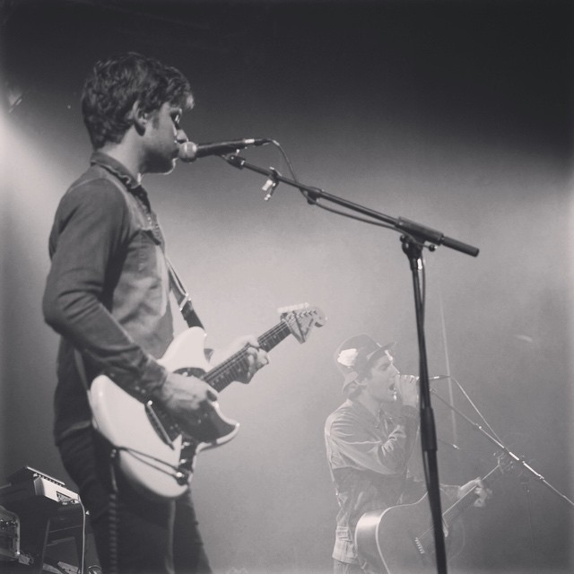
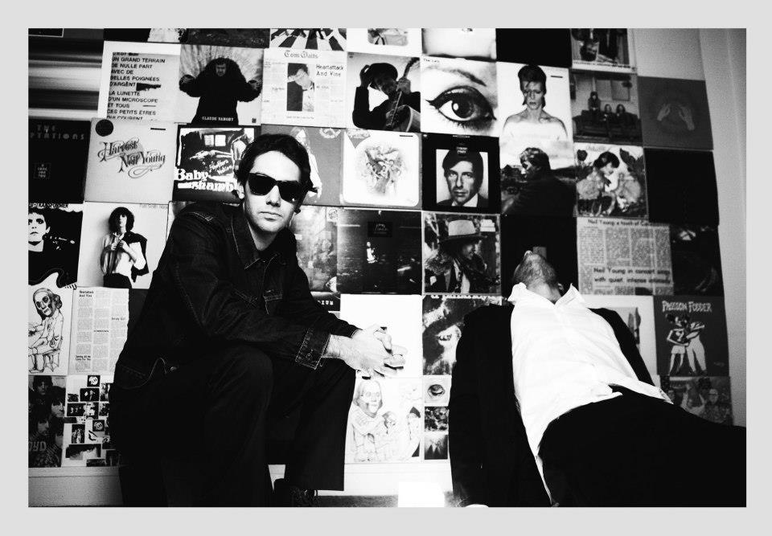

- Vertigo
- Austerlitz
- Caramel
- Amsterdam
- La grâce des acrobates
- Hey, tu ne me manqueras Plus
- A Voronej
- Mourir au combat
- Les zouaves
- Les rapides
- Odessa
- Phantom punch
- Ville lumière
Seules à la nage au-dessus des ghettos
Des filles sages, pâles, cachées sous des manteaux
Fixent les yeux verts comme des feux de Bengale
Des amoureux perdus au creux des vagues
Sur un air de coup de spleen
Tous les démons de la ville
Sur un parking désert
Hurlent à la lune ton nom
Vertigo
Dans les villes et la vitesse
Dans les lignes droites, dans l’ivresse
Seules à la nage au pied des pyramides
La nuit s’écrase sur leur visage docile
On pleure, on deal mais y’a plus rien qui bouge
2-3 souvenirs lovés dans la grisaille
Sur un air de coup de spleen
Tous les démons de la ville
Sur un parking désert
Hurlent à la lune ton nom
Vertigo
Dans les villes et la vitesse
Dans les lignes droites, dans l’ivresse
Combien de silhouettes résistent au désert
A l’heure où on s’aime à se briser le dos
Que les éclats de verre labyrinthent la scène
Où tu m’as tant traîné hors de l’eau
Les fusillades se taisent, à l’heure où la lumière s’endort
Combien d’étés peuvent repousser l’hiver
Et les canons qu’on braque sur le cœur
Combien de silhouettes résistent aux frontières
Aux heures où on ère à se briser le dos
Un éclair puis la nuit et les gamins se relèvent
Comme on se fait la peau pour de faux
Les fusillades se lassent, à l’heure où la lumière s’endort
Combien d’étés peuvent repousser les glaces
Et les canons qu’on braque sur le cœur
Week-ends aromatisés aux élyséennes
On se traîne sous le soleil qui danse et qui se balance
Les lundis nous envient, toi cambrée au ciel, caramel
Moi j'fais couler un bain, fais durer les ébats,
Loin dans le temps, loin dans l'endroit,
Toi et tes acrobaties sous les roulis de chocolat
Des pluies diluviennes sur mes coups d'soleil
Je prends la fuite, tu m'fliques, j't'évite
Le chaos, la félicité, le chaos, la félicité
Si t'as peur, blottis-toi contre moi
J't'emmènerai ailleurs, j'te ferai du cinéma
Déboulés dans les atolls,
Tes bikinis qui se gondolent,
Suis-je mort ou bien ressuscité ? Mort ou bien ressuscité ?
Le soir on s'étreint les deux pieds dans l'eau,
Je perds la boule, j'enroule, déroule,
Le chaos, la félicité, le chaos, la félicité
Si t'as peur, blottis-toi contre moi
J't'emmènerai ailleurs, j'te ferai du cinéma
Alors on s'étreint les deux pieds dans l'eau,
J'perds la boule, j'enroule, déroule,
J'provoque à la martiniquaise tes p'tits miaulements de finlandaise
Aux plus belles heures de la nuit, à bout de souffle elle échappe aux sirènes de police
Au travers des ruelles de velour, travestie, elle danse, elle déambule, jusques au fond de longs et crasseux couloirs et, un genou à terre,
Elle se cogne le reflet aux vitrines, le sourire aux lèvres elle clappe des mains
A la gloire perdue de ses gamines, bercée d'effluves tropicales
Et le ciel se dégage, et les vents les emportent
Une lumière se penche, sur Amsterdam
Ô le ciel se dégage, les amours se flinguent,
Le soleil en plein visage, à Amsterdam
Aux plus belles heures de la nuit, à bout de souffle elle échappe aux rumeurs des dortoirs
Elle balaie d'une main les allumeuses, et dérivant
Elle se cogne le reflet aux vitrines, elle crie l'espoir de Dickinson
Près de toi je me suis endormi, bercé d'effluves de jasmin
Et le ciel se dégage, et les vents les emportent
Une lumière se penche, sur Amsterdam
Ô le ciel se dégage, les amours se flinguent,
Le soleil en plein visage, à Amsterdam
Aux plus belles heures de la nuit, à bout de souffle elle échappe aux sirènes de police.
Au travers des ruelles de velour, travestie, elle danse, elle déambule, jusques au fond de longs et crasseux couloirs. Tutti Frutti, confettis, de grâce et de panache elle s'enivre, aux heures où on s'aime à en mourir, cachés sous les lits, un couteau dans l'oreiller, la peur au ventre au fond du dortoir. Son écorce s'effrite, un genou à terre elle balaie d'une main les rumeurs et les allumeuses, les allumeuses et les allumés qui les suivent, ces allumés qui, sur son ventre, récoltent ce qu'ils ont semé.
Sortez les deux mains sur la tête, la nuit s’apprête à disparaître
Une limousine fuit dehors, peurs et paresse à son bord
Ton corps recroquevillé mime le triste sort
Cette nuit le roi est mort
Combien d’hivers avaient brûlé ?
Combien de manèges en fumée ?
On poursuit le bruit de l’or
Qui ricoche sur la ville endormie
Tes mains toutes glacées
Se brisent sur mon corps
Où étais-tu cette nuit là ?
Quand ils fusillaient les astres
Que le ciel échangeait sa place
Pour mourir sur le trottoir
Te protégeais-tu bien du froid ?
Qui souffle lorsque s’efface la grâce des acrobates
Qui souffle quand la nuit efface la grâce des acrobates
Combien de rêves grésillaient, combien ne vieilliraient jamais…
Modigliani sur ressorts repense le décor
Les entends-tu t'encercler ?
Mille trapèzes à l’effort
Où étais-tu cette nuit là ?
Quand ils fusillaient les astres
Que le ciel échangeait sa place
Pour mourir sur le trottoir
Te protégeais-tu bien du froid ?
Qui souffle lorsque s’efface la grâce des acrobates
Qui souffle quand la nuit efface la grâce des acrobates
Ils titubent, ils vacillent les acrobates
Un genou à terre, dans le froid
Titubent, vacillent sans grâce
Depuis que tu es loin de moi
Un shoot de lumière éclairera les pavés
Les écailles du ciel m’emmèneront vers les blés
Là où le temps fait se courber la ville
Un peu plus loin de toi
Des pétards, des sirènes, crépiteront sous une pluie dorée
Caressant la peur au rythme des marées
Au creux de la nuit, j’quitterai les bas-côtés
Et tu ne me manqueras plus
Hey, tu ne me manqueras plus
Tes mains ô tes mains sur ma carabine
Si tu tirais, tes balles se perdaient dans le vent
J’oublierai tout au pied de la colline
Où tu m’as fait la guerre
Des mille cigarettes sur les toits de brique à Roubaix
À nos étreintes à l’arrière des taxis volés
Au bout de la nuit tout finit par brûler
Les feuilles mortes et les années
Et tu ne me manqueras plus
Hey, tu ne me manqueras plus
La ville semble se noyer
Toi, à contre-courant
La ville semble se noyer
On dirait que le ciel a pris les couleurs des indiennes
Criant que tu ne me manquerais plus
Et tu ne me manqueras plus
Hey, tu ne me manqueras plus
Les souvenirs que l'on sait réciter peuvent s'oublier
Peuvent s'oublier les ménesses qu'on a quittées avant le jour
À Voronej on m'a déposé les mains ligotées
Mal ligoté je m'dégageais, je dérangeais presque toujours
Si le monde est un jouet, pourras-tu m'apprendre ?
Car moi quand j'essaie d'oublier je ressemble
À celui qui, tous les soirs, se transforme et s'offre en bête de foire
Même au glas de l'assommoir n'oublie pas encore
Et mille lits, mille villes et mille ennuis, je les oublie
Je les oublie plus vite encore qu'un ricochet sur tes croquis
Si le monde est un jouet, pourras-tu m'apprendre ?
Car moi quand j'essaie d'oublier je ressemble
À celui qui, tous les soirs, se transforme et s'offre en bête de foire
Même au glas de l'assommoir n'oublie pas encore
Ils cavalaient loin d’ici entrelacés dans l’espace
Perdus partout lorsque sur la terre
Les parallèles lascives ils les remettaient à leur place
Comme la ville respirait à l’envers
Des pluies électroniques, en transit, bousculaient l’histoire
Noire et blanche, camouflée comme hier
Menottes et brouillard, on traversait sans rien y voir
L’heure avançait et se lisait sur les lèvres
Venu le soir, la brume fait prisonnier, lâche
Qui survole les toits
Eux surfent la nuit orage
Condamnés à mourir au combat
L’ambulance est maligne, elle rôde autour de moi
Empruntant les traits de ton visage
« Qu’attends-tu pour me suivre et te sortir de là ?
Saurais-tu déjà mentir à ton âge ? »
Venu le soir, la brume fait prisonnier, lâche
Qui survole les toits
Eux surfent la nuit orage
Condamnés à mourir au combat
Dès que derrière les buildings s'endort le ciel
Voyez les hommes tomber les ceintures,
Les femmes les caracos de soie
Plongés dans le bleu des verres,
Les silhouettes s'affairent,
A qui sont ces jambes qui s'unissent et dansent au-dessus des toits ?
Qui sont ces zouaves qui twistent et puis qui s'échappent ?
Aussi vite qu'on gratte une allumette
Leur coeurs pressent le pas et pour fuir le froid
Ils se laissent traîner, traîner, traîner le soir dans les virages
La nuit ils dévient, dévient jusqu'à la plage
Ils se laissent traîner, traîner, traîner le soir dans les virages
Déguisés de cent façons,
Leur course passagère orne l'horizon
Comme un bijou dans la rivière
Qui sont ces zouaves qui twistent et puis qui s'échappent ?
Aussi vite qu'on gratte une allumette
Leur coeurs pressent le pas et pour fuir le froid
Ils se laissent traîner, traîner, traîner le soir dans les virages
La nuit ils dévient, dévient jusqu'à la plage
Ils se laissent traîner, traîner, traîner le soir dans les virages
J'ai vu l'été chavirer,
J'ai vu des gens couler sous les courants
Dans les rapides
J'ai vu les tambours du Brésil se noyer dans le vide
J'ai vu des gosses prier les yeux des reptiles
Dans les rapides
Quand la nuit se dressait devant nous
Que les rives étaient toutes infidèles
Je sais pourquoi j'étais à genoux
Maintenant j'me rappelle
Tous les sunlights, tous les hivers
Tout est illuminé quand tout s'accélère
Et nous laisse au vent
J'ai vu la mer au loin devant
J'ai vu l'estuaire se tordre sous les torrents
Dans les rapides
J'ai vu les cargos dans les îles, tes yeux dans le rétro
J'ai vu des gueules fragiles gâcher les photos
Dans les rapides
Quand la nuit se dressait devant nous
Que les rives étaient toutes infidèles
Je sais pourquoi j'étais à genoux
Maintenant j'me rappelle
Tous les sunlights, tous les hivers
Tout est illuminé quand tout s'accélère
Et nous laisse
Tous les sunlights, les hôtels bleus
Les nuits d'avril où les rapides nous perdent
Et nous laissent au vent
Ô ma belle héroïne, tu files sur la ville
Tu rêves de strass et de crash sur la banquette d’une vieille Cadillac
Et de Lilli Palmer
La nuit sous les missiles, à l'aube un satellite
Tu veux du rush mais tes poches sont vides, vite que vienne le soir
Que le temps nous emporte
Empêtré dans la rue Morgue, j'regrette tes longs silences
Et je m'balance des parisiennes, si loin
Si loin du ciel d'Odessa, des fusées ivres en balade
Si loin de ces nuits où les mères prient pour rien
Si loin de moi
Paris la magnifique, elle la vraie héroïne
Tu rêves de shoot et de spoot, de brûler tes ailes de gosse
Et de lueurs sous ta porte
Tu piétines les vignes, en apnée dans la piscine
Tu veux des guns et des clubs, des nuits claires ô des nuits sans escales
Même une douce noyade
Empêtré dans la rue Morgue, j'regrette tes longs silences
Et je m'balance des parisiennes, si loin
Si loin du ciel d'Odessa, des fusées ivres en balade
Si loin de ces nuits où les mères prient pour rien
Si loin des trains pris au hasard, des filles qu'on rejoint à la nage
Si loin de ces nuits où les mères prient pour rien
Si loin de moi
Quand j'entends cette mélodie le temps se tord
Le temps d'un instant magnétique tout me ramène dans ton décors
Quand j'entends ces mots hésitants mon coeur joue à voguer
L'âme à contre courant, se réveiller un soir d'été dans un lit, dans un champ
Revoir, revivre la même chose, le son de ta voix qui chuchotait
Love me, please love me, allongés sous le froid
Love me, please love me, dans un souffle tu t'en vas
Quand j'entends cette mélodie la rue s'éteint
La rue se change en estrans fiers où tu t'étales comme un ruban sous la mer
Quand j'entends ces mots perçants mon coeur joue à voguer
L'âme à contre courant, se réveiller un soir d'été dans un lit, dans un champ
Revoir, revivre la même chose, le son de ta voix qui chuchotait
Love me, please love me, allongés sous le froid
Love me, please love me, dans un souffle tu t'en vas
Si le soleil prend la mer, que les alizés nous désertent
Est-ce que tu resteras encore près de moi ?
Qu’au coin d’une rue une mère nomade nous devine un atterrissage
Laisseras-tu sur moi tes lèvres de sel ?
Est-ce que tu m’aimeras encore ?
Si nos souvenirs de vieux hôtels et de cerisiers sur la plaine
S’ils se noyaient dans les draps sous nos yeux
Que nos caresses militaires se réfugiaient près du feu
Est-ce que tu sécherais mes larmes de gamin ?
Est-ce que tu m’aimerais encore ?
Est-ce que tu m’aimerais encore
Si une nuit des plus calmes nous surprenait en route ?
Me ferais-tu un abri ?
Ville Lumière
Si douze alarmes retentissaient et que l’une d’elles nous démasquait
Poserais-tu encore sur moi tes doigts étincelles ?
Si douze alarmes retentissaient, que plus personne ne tendait l’oreille
Voudrais-tu encore de moi sur ton corps ?
Est-ce que tu m’aimerais encore ?
Est-ce que tu m’aimerais encore ?
Si une nuit des plus douces nous renversait en route
Me prendrais-tu dans tes bras ?
Dans tes mains où les lanternes fantômes se réfugient le soir
Pour éclairer quelques mômes qui s’embrassent
Ville Lumière
Si le soleil prend la mer, que les alizés nous désertent Est-ce que tu resteras encore près de moi ? Qu’au coin d’une rue une mère nomade nous devine un atterrissage Laisseras-tu sur moi tes lèvres de sel ? Est-ce que tu m’aimeras encore ?
Si nos souvenirs de vieux hôtels et de cerisiers sur la plaine S’ils se noyaient dans les draps sous nos yeux Que nos caresses militaires se réfugiaient près du feu Est-ce que tu sécherais mes larmes de gamin ? Est-ce que tu m’aimerais encore ?
Est-ce que tu m’aimerais encore Si une nuit des plus calmes nous surprenait en route ? Me ferais-tu un abri ? Ville Lumière
Si douze alarmes retentissaient et que l’une d’elles nous démasquait Poserais-tu encore sur moi tes doigts étincelles ? Si douze alarmes retentissaient, que plus personne ne tendait l’oreille Voudrais-tu encore de moi sur ton corps ? Est-ce que tu m’aimerais encore ? Est-ce que tu m’aimerais encore ? Si une nuit des plus douces nous renversait en route Me prendrais-tu dans tes bras ?
Dans tes mains où les lanternes fantômes se réfugient le soir Pour éclairer quelques mômes qui s’embrassent Ville Lumière
- 
© Olivier Muller
- 
© François Laloyer
- 
© Olivier Muller
-

© Olivier Muller
-

© Lucie Martin
- 
© Franck Bohbot
-

© Florie Berger
DUEL c’est l’histoire en marche de deux frères qui le sont devenus, l’alchimie Pop entre Julien Boulfray et Brieuc Carnaille, deux auteurs compositeurs qui se complètent, deux voix qui se répondent.
Après avoir partagé la scène partout en France (Printemps de Bourges, Bars en Trans…), à Paris (La Cigale, La Boule Noire…), en Europe (Bruxelles, Amsterdam, Londres) ou à New-York avec des artistes tels que Feu! Chatterton, Talisco, Christophe, Camélia Jordana ou encore Pete Doherty, DUEL sort son premier album "GUNNN EXPRESS" le 23 février 2015. Les singles « Caramel » et « Hey, tu ne me manqueras plus » sont notamment diffusés sur Virgin Radio, RTL 2 ou Ouï Fm.
Le duo enregistre dans la foulée les maquettes de son successeur attendu pour 2017.
« Ils rappellent les travaux de Gaëtan Roussel par cette façon de croiser les influences et de jouer la pop sans complexe dans la langue de Bashung. » - LES INROCKUPTIBLES
Prochainement